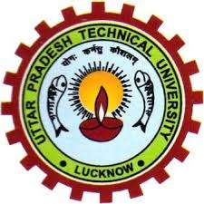
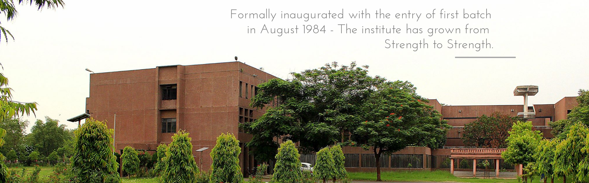

Institute of Engineering & Technology
अभियांत्रिकी एवं प्रौद्योगिकी संस्थान, लखनऊ
An Autonomous Constituent Institute of Dr. A.P.J. Abdul Kalam Technical University, U.P., Lucknow


Institute of Engineering and Technology, Lucknow (here after called “IET) (popularly known as the-“Engineering College” in Lucknow) is one of the premier and top ranked institute among all technical institutions associated/affiliated to Dr. A. P. J. Abdul Kalam Technical University, Lucknow (here after called “AKTU”). IET was established by the government of Uttar Pradesh in 1984 as a society governed Institute. The Institute is financed by Government of Uttar Pradesh and is being administered by the Executive Council of AKTU.
IET Lucknow was started as the ‘Faculty of Engineering and Technology’ of University of Lucknow. Initially in the year 1984 it offered B. Tech. Degree in three programs namely Computer Science and Engineering, Electrical Engineering and Electronics & Communication Engineering. In the subsequent year, two more programs i.e. B. Tech. in Civil Engineering and B. Tech. in Mechanical Engineering came into existence. The Campus was developed by Uttar Pradesh Rajkiya Nirman Nigam Ltd (UPRNN) on a 100-acre (0.40 km2) land provided by the government of Uttar Pradesh. IET campus comprises of Administrative Blocks, Academic Blocks, Boys’ and Girls’ Hostels and nearly 100 residences for Teaching and Non-Teaching Staff Members. Lucknow Development Authority (LDA) provided required support for construction of external roads, electric supply, drainage and sewage for the Institute.
Under graduate students are admitted through UPSEE (Uttar Pradesh State Entrance Examination) on the basis of the rank obtained by the candidate in this examination. At present this examination is conducted by AKTU. Around 1,50,000 students appear in this examination every year seeking admission to more than 800 engineering colleges affiliated to AKTU. The Institute is one of the most preferred Institute by top rankers during UPSEE counseling.
There are eight Boy’s and three Girl’s Hostels, accommodating around 2000 students. All the hostels are located within the Institute campus. Each hostel has its own mess, managed by student representatives. Hostels are provided with Television, Water-Purifier, Water-Cooler, Geyser, and facilities for Indoor Games. Various hostels are Vishveshwaraiya Bhawan-A, Vishveshwaraiya Bhawan-B, Raman Bhawan-A, Raman Bhawan-B, Bhabha Hostel, Aryabhatt Hostel, Ramanujam Hostel , Ram Manohar Lohia Hostel, Gargi Bhavan (Girl’s ' Hostel) Apala Hostel (Girl’s Hostel) and Sarojni Bhawan (Girl’s Hostel). A newly constructed ‘Maitraiyee Hostel is ready for the allotment to the girl-students.
The Annual Cultural and Literary Fest of the Institute named “Encore” is organized every year. Students from various institutions of Northern India participate in the fest. The event is intended to provide a platform for co curricular activities which lead to selfdevelopment by providing opportunities to enhance the management, organizational and other skills of the students. "Shauryotsava" is the Annual Sports and Games Fest, and “Parakram" is the Technical Fest held every year. All departments/departmental societies of the Institute organize events in their respective fields. IET Lucknow is having a vibrant Alumnus. Institute organizes "Convergence", an event to mark the Silver Jubilee Reunion of its graduates every year, along with alumni of other batch.